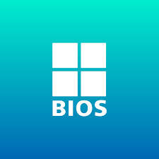
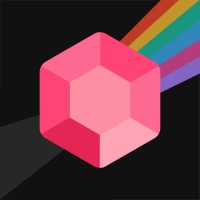

Alejandro Taichi Suarez Inamoto (1990 – actualidad), Abogado, Cocinero, escritor y programador (en proceso). Venezolano, nacido en Barquisimeto, Estado Lara, graduado de abogado en el 2013 en La Universidad de Carabobo.
Tuve una carrera de 3 años especializado en Derecho laboral, cosechando éxitos pequeños pero suficientes para montar un emprendimiento en un bufete de abogados propio, junto con otros abogados. Sin embargo, no duró mucho: La crisis económica Venezolana me obligó a replantearme mis posibilidades y siempre quise estudiar informática en Venezuela, pero la crisis de luz y internet hacía todo más cuesta arriba y viéndome arrinconado decidí que lo mejor era emigrar. Efectivamente, me dejé llevar por un país diferente que me ofreciera mejores oportunidades para mi futuro y elegí Uruguay por sus grandes avances en Salud, Derecho a las minorías y Avance tecnológico por su cable submarino con Europa y por sus proyectos en el sector tecnológico.
Empecé formalmente en 2019 a programar gracias a un curso especial de programación en Python, del cual me gradué ese mismo año. Luego, subí la apuesta y comencé un curso de programación Front-end en Hack academy, graduándome en el 2020. Actualmente, sigo educándome con la iniciativa Freecode-camp y el bootcamp de Lumetrio.
Entre mis hobbies están: los tutoriales de programación, los videojuegos, la música, la cocina asiática y la escritura de novelas de ciencia ficción.

BIOS
El Instituto Uruguayo BIOS es una institución educativa de alta calidad en Uruguay que ofrece programas de capacitación y formación en diversas áreas de la informática, incluyendo carreras cortas y largas respaldadas por el INEFOP. Muy buen metodo de entrada y con precios razonables al bolsillo.
ir a BIOS
Hack Academy
Hack academy es un instituto privado Uruguayo que ha ido ganado importancia en los ultimos años.Poseen Bootcamps, cursos y carreras cortas especializadas en informatica y te dan muchas herramientas que quedan a tu disposicion luego de terminar el curso que hacen que buscar trabajo en el medio sea mas sencillo ya que ofrecen varias ofertas relacionadas al mundo del IT
ir a hack academy

Lumetrio
Lumetrio es un bootcamp desarrollado para personas que deseen aprender sobre la programacion en un bootcamp en un formato mas relajado pero muy completo en contenido. posee varios cursos que van desde principios de la programacion hasta dominio de React y principios del back end con python. Muy recomendado.
ir a lumetrio

Freecodecamp.com
Los cursos de FreeCodeCamp se basan en proyectos, lo que significa que los estudiantes tienen la oportunidad de aplicar los conocimientos adquiridos en situaciones concretas. Además, la plataforma también ofrece una comunidad activa de estudiantes y profesionales del sector, lo que facilita el networking y el intercambio de conocimientos.
ir a FreeCodeCamp

Platzi
Los cursos de Platzi están diseñados para ser prácticos y aplicables a situaciones reales, y su plataforma ofrece herramientas para la colaboración y el networking entre estudiantes y profesionales del sector. Además, la plataforma también ofrece certificaciones para validar los conocimientos adquiridos en los cursos.
ir a platzi

Creando una pagina web
La inspiracion no viene sola y la copia es el mayor de los halagos.Por eso doy creditos al programador AlexCG por inspirarme a hacer este portafolio propio inspirandome en su pagina web publicada en youtube. Al igual que la pagina que estas viendo posee conocimientos de HTML,CSS y javascript
ir a AlexCG